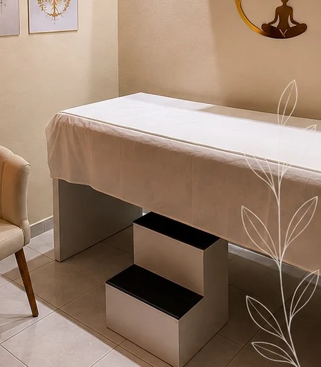
Mente e emoções
Psicologia e hipnoterapia
- Acolhimento individual
- Emoções e rotina
- Objetivos pessoais
Um espaço de escuta para conversar sobre sua história e definir, junto ao profissional, caminhos que façam sentido para o seu momento.
Um espaço multidisciplinar para cuidar da mente, do corpo e do bem-estar, respeitando o tempo e a história de cada pessoa.
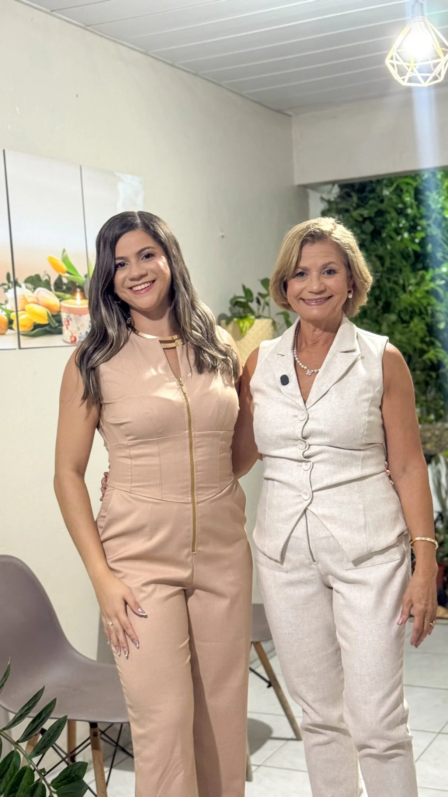
Cuidado que respeita sua história
O Espaço do Equilíbrio reúne diferentes profissionais e práticas em um só lugar. Aqui, cada atendimento considera a singularidade de quem chega e abre caminhos possíveis para o autocuidado.
Encontre seu caminho de cuidado

Mente e emoções
Um espaço de escuta para conversar sobre sua história e definir, junto ao profissional, caminhos que façam sentido para o seu momento.
Alimentação e rotina
A avaliação considera seus hábitos, rotina e objetivos para construir orientações alimentares possíveis para o dia a dia.
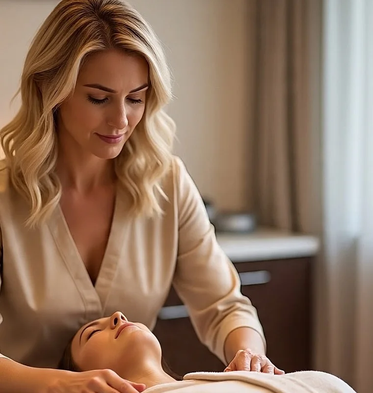
Presença e equilíbrio
Práticas integrativas oferecidas pela equipe para momentos de pausa e autocuidado. Converse com os profissionais para conhecer cada sessão.
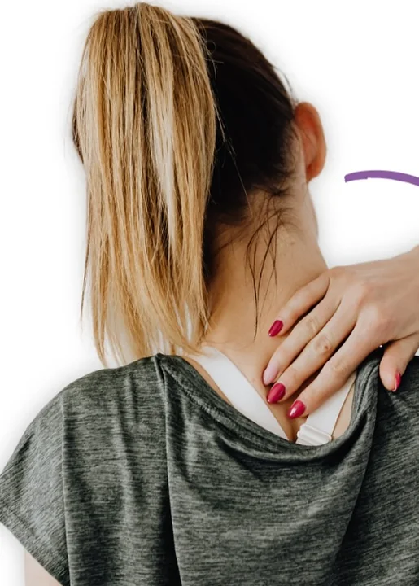
Terapias corporais
Acupuntura e auriculoterapia são técnicas distintas. O profissional explica como funciona cada atendimento e conversa com você sobre suas necessidades.
Cuidado corporal
Os atendimentos são diferentes entre si e conduzidos por profissionais. A conversa inicial ajuda a entender cada técnica e os cuidados necessários.
Pausa e autocuidado
Conheça as modalidades e a duração de cada sessão. O atendimento é combinado conforme a técnica oferecida e a disponibilidade.
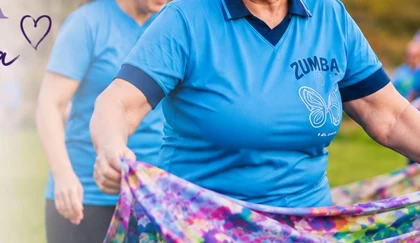
Expressão e movimento
Encontros em grupo que exploram o movimento e a expressão corporal. A equipe informa as próximas turmas e como participar.
Não sabe por onde começar?
Cuidado que acompanha sua rotina
Além dos aromatizantes, a linha conta com diferentes blends artesanais. Consulte a equipe para conhecer outras opções.
Consultar produtos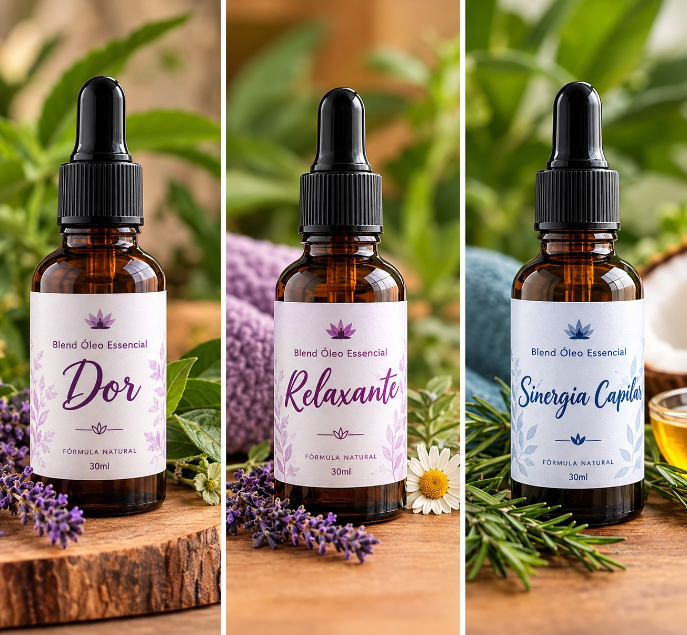
Locação de salas para atendimentos
Salas disponíveis para locação no Espaço do Equilíbrio, em João Pessoa. Um ambiente agradável e preparado para a rotina de quem cuida.
Rua João Batista do Nascimento, 137 · João Pessoa, PB
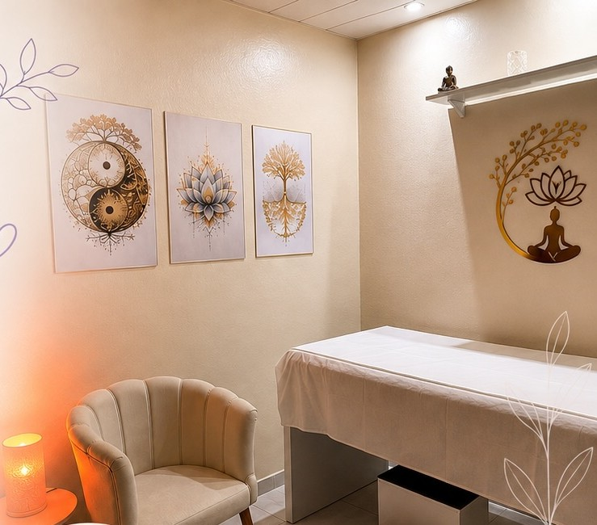
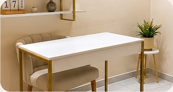
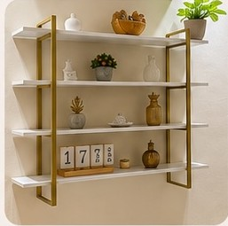
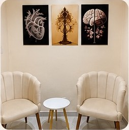
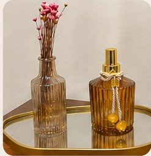
Avaliações no Google
Histórias reais de quem viveu a experiência de um cuidado integral em nosso espaço.
Ambiente acolhedor e confortável durante todo o atendimento.
Ambiente muito agradável que traz paz e tranquilidade.
Ambiente acolhedor! Profissionais maravilhosos. Só gratidão.
Antes de chegar
Respostas sobre atendimentos, agendamento, produtos e locação de salas.
Psicologia, hipnoterapia, nutrição, Reiki, aromaterapia, acupuntura, auriculoterapia, ventosaterapia, quiropraxia, massagem relaxante, drenagem linfática e dançaterapia. A disponibilidade varia conforme os profissionais e a agenda.
Entre em contato pelo WhatsApp. A equipe pode explicar as opções de atendimento e combinar um horário com você.
Há aromatizantes de ambiente e blends de óleos essenciais. Consulte a equipe para confirmar opções, composição, valores e disponibilidade.
Sim. O Espaço disponibiliza salas para profissionais da saúde e bem-estar. Consulte as condições e a disponibilidade com a equipe.
Horários, disponibilidade e valores são informados pela equipe conforme o atendimento. Consulte pelo WhatsApp.
Rua João Batista do Nascimento, 137, João Pessoa, Paraíba, CEP 58056-460. Abrir no mapa ↗